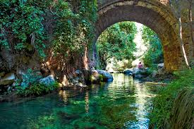
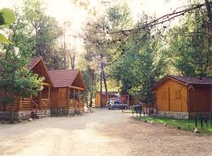

Un lugar que te llenará de paz, en pleno corazón del Parque Natural de las Sierras de Cazorla, Segura y las Villas. El complejo turístico camping PUENTE DE LAS HERRERÍAS, a 20 Km. de la localidad de Cazorla se encuentra situado a 1000 m. sobre el nivel del mar y junto a la orilla del río Guadalquivir en su tramo más alto, lo que proporciona un microclima con temperaturas máximas de 33º y mínimas de 10 a 12º en erano.
Visita camping Puente de las Herrerias
El Camping Rural Llanos de Arance es un lugar ideal para disfrutar de la naturaleza en pleno corazón del parque natural de las Sierras de Cazorla, Segura y Las Villas, bajo frondosos pinos y al borde del río Guadalquivir, donde podrá practicar la natación y pesca.El agua en abundancia, la limpieza esmerada y un servicio de vigilancia hacen de este camping el lugar idóneo para sus vacaciones. La multitud de entornos y paisajes que le rodean garantizan unas vacaciones inolvidables.En el Camping Llanos de Arance es posible disfrutar de la plena integración en la naturaleza sin dejar de estar cómodo y asistido por un amplio conjunto de servicios e instalaciones dispuestos cuidadosamente para atender al visitante.El Camping Llanos de Arance consta de 55.000 metros cuadrados, bajo frondosos chopos y sombras abundantes, zonas recreativas y grandes áreas de césped. También disponen de caravanas y módulos alquilables, que cuentan con camas, avance, mesa con sillas y frigorífico. Módulos de aseos y duchas, fregaderos y pilas, zona de juegos recreativos y área deportiva.Además de tener el río Guadalquivir junto al camping, en temporada de verano tendrás abierta una piscina con agua cristalina, una cuidada zona de césped y un pequeño bar. Dispone de zona de barbacoas, bar de tapas, raciones, comidas y desayunos. Especialidad en carnes de monte. Cocina serrana y mediterránea. Chimenea.
Visita camping Llanos de Arance
El Parque Cinegético Collado del Almendral se visita mediante visita guiada en tren turístico por un recorrido de 5km. (unos 45 minutos en tren), donde los visitantes podrán ver animales en semilibertad dentro de un paraje natural de 100 hectáreas. Observarán entre otros; ciervos, gamos, muflones, cabra montés... Contamos además con una ruta a pie de 1,5 kms. (opcional, previo pago de visita) que incluye la parada en dos miradores con vistas al pantano del Tranco, donde se encuentran las instalaciones de exposición y observación de aves rapaces. El centro cuenta con tienda de regalos y una cafetería. En el Parque Cinegético "Collado del Almendral" se pueden ver unas impresionantes vistas del pantano del Tranco, ofreciendo al visitante una visión general de las especies que habitan estas sierras.
Visita